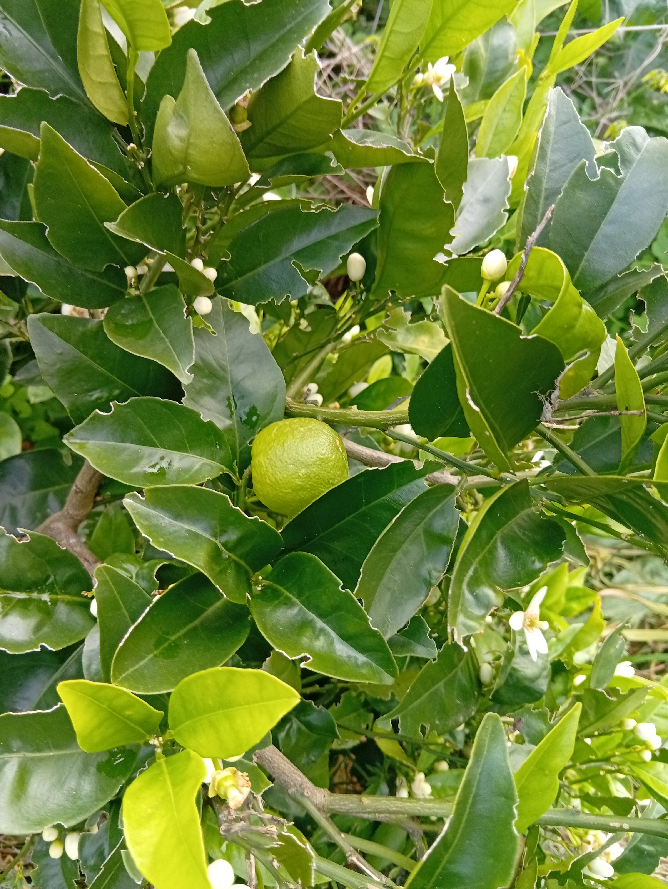

Recriar a Floresta para Produzir Alimento
A agrofloresta sintrópica é um método de cultivo inspirado na sucessão natural das florestas. Em vez de lutar contra a natureza, trabalhamos com os seus processos — cobrindo o solo, criando estratos de vegetação e alimentando a microbiologia com biomassa constante.
Em Mértola, onde o verão ultrapassa os 40ºC e a chuva é escassa, este sistema não é apenas uma escolha filosófica — é uma necessidade técnica. O solo descoberto perde humidade e vida. A floresta retém tudo.
Cada intervenção tem uma lógica: a poda não é destruição, é aceleração. A biomassa caída não é lixo, é adubo. As galinhas não são decoração, são motores de fertilização integrada.
Princípios do Sistema
Mulch de biomassa e lã de ovelha mantém a humidade, regula temperatura e alimenta fungos micorrízicos.
Dossel, sub-dossel, arbustos, herbáceas e cobertura rasteira em simultâneo.
Rega por gotejamento, monitorização do poço em tempo real via IoT.
13 galinhas de serviço: controlo de pragas, fertilização e aração natural.



Visita ao Sistema — Ano 3
Registo em campo da densidade sintrópica e cobertura do solo após 3 anos.
Poda de Estratificação
Como e porque se corta: acelerar a sucessão e produzir biomassa para o solo.
| Espécie | Funções Principais |
|---|---|
| Sobreiro | Climax-Sombra estrutural, microclima, raízes profundas, abrigo fauna |
| Azinheira | Climax-Sombra estrutural, produção de bolota, estabilidade do ecossistema |
| Oliveira | Climax-Azeite, estabilidade ecológica, longevidade |
| Alfarrobeira | Climax-Fruto, grande resistência à seca |
| Eucalipto | Sucessionais-Biomassa rápida, drenagem hídrica, abrigo fauna |
| Choupo Branco | Sucessionais-Bomba de água, biomassa rápida, estabilização de solo |
| Salgueiro | Sucessionais-Controlo hídrico, biomassa, enraizamento profundo |
| Lódão-bastardo | Climax-Árvore estrutural mediterrânica, alimento para aves, regeneração natural |
| Melia azedarach | Sucessionais-Biomassa rápida, sombra, inseticida natural |
| Espécie | Funções Principais |
|---|---|
| Laranjeira | Fruta, atracção de polinizadores |
| Tangerineira | Fruta |
| Limoeiro | Fruta |
| Figueira | Fruta, alimento para fauna |
| Nespereira | Fruta precoce (Inverno/Primavera) |
| Pereira | Fruta |
| Amendoeira | Fruto seco, atracção de polinizadores |
| Pessegueiro | Fruta |
| Albricoqueiro | Fruta |
| Amoreira Branca | Fruta, biomassa rápida |
| Espécie | Funções |
|---|---|
| Romanzeira | Fruta, polinizadores |
| Murta | Abrigo fauna, medicinal |
| Aroeira | Resistência à seca, biodiversidade |
| Sanguinho-das-sebes | Alimento fauna |
| Sanguinho-do-monte | Regeneração natural |
| Tagasaste | Fixação de azoto, biomassa |
| Esteva | Pioneira, retenção de humidade, resina medicinal |
| Espécie | Funções |
|---|---|
| Lavanda | Polinizadores, repelente de insetos |
| Rosmaninho | Polinizadores |
| Alecrim | Polinizadores, medicinal |
| Orégãos | Polinizadores, culinário |
| Espécie | Funções |
|---|---|
| Vetiver | Controlo de erosão, infiltração de água, raízes profundas |
| Erva-príncipe | Biomassa, repelente de insetos |
| Espécie | Funções |
|---|---|
| Moringa | Folhas comestíveis, biomassa rápida |
| Ora-pro-nóbis | Proteína vegetal, folhas comestíveis |
| Espécie | Funções |
|---|---|
| Malva | Mineralização de nutrientes |
| Serralha | Biomassa rápida |
| Cardo | Raízes profundas, descompactação do solo |
| Funcho | Atrai insetos benéficos |
| Dente-de-leão | Mineralização de minerais |
| Azedas | Acumulação de minerais |
| Tanchagem | Medicinal, melhoria do solo |
| Trevo (flor amarela) | Fixação de azoto, cobertura viva |
Preparação do Solo
Primeira intervenção: remoção de vegetação invasora, análise de solo e instalação do sistema de rega por gotejamento alimentado a energia solar.
Plantação Inicial
Instalação das pioneiras de crescimento rápido (Melia, Choupo, Amoreira, Eucalipto) e das espécies de clímax (Alfarrobeira, Sobreiro, Nespereira). 30+ espécies no total.
Primeira Poda de Estratificação
As pioneiras são podadas pela primeira vez, cobrindo o solo com biomassa fresca. Temperatura do solo desce 8ºC em relação ao exterior.
Integração das Galinhas
13 aves de serviço entram em rotação no sistema. Fertilização natural, controlo de pragas e aração superficial sem qualquer input externo.
Sistema em Aceleração
Primeiros frutos colhidos. Solo com vida visível — minhocas, fungos micorrízicos, cobertura espontânea. O sistema começa a trabalhar por si.